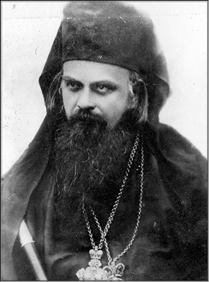
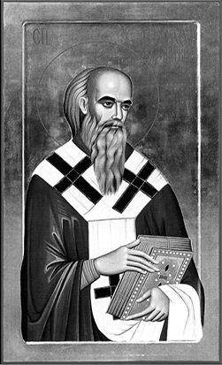
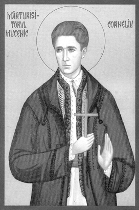

Primul și cel mai mare martir este însuși Domnul Iisus Hristos. El a mărturisit lumii întregi că este Fiul lui Dumnezeu. Din sfântă gura Sa n-a ieșit minciună, El fiind însuși Adevărul. Tot ce a spus cu cuvântul, a împlinit cu fapta – absolut tot.
A spus despre Sine că este „blând și smerit cu inima”, și a împlinit-o cu fapta: Cel Care a creat soarele, S-a smerit în pântecele Fecioarei, S-a lăsat purtat în brațe; Cel pe Care Îl țin Tronurile, Heruvimii iar Serafimii îl înconjoară a șezut pe mânzul asinei la intrarea în Ierusalim; Cel Care este foc mistuitor se lasă de două mii de ani în mâinile și spre hrana creștinilor sub chipul pâinii și al vinului la Sfânta Liturghie; Cel Care a creat omul din nimic se lasă prins, legat, bătut, scuipat, batjocorit, răstignit, omorât – ca om – de omul satanizat. Iată că El ne-a arătat ce înseamnă să fii blând și smerit cu inima. A făcut minuni, vindecări sufletești și trupești ca nimeni altul și niciodată nu S-a lăudat. A mai învățat: Iertați și veți fi iertați! Și știm cu toții cuvintele Lui de pe cruce: „Părinte, iartă-le lor, că nu știu ce fac!”
Nimeni dintre pământeni, de mii de ani de când e lumea n-a putut birui moartea. Oricât de înțelepți au fost, oricât de puternici, toți, de la primul până la ultimul s-au oprit în fața acestui zid de netrecut. El singur, Iisus Hristos Dumnezeul-Om a trecut înfricoșătorul zid: moartea – înviind a treia zi. „Eu sunt Adevărul; Eu voi învia a treia zi”. Și a Înviat. Cu cât vrăjmașii Săi au căutat să pună piedici, piatră grea și mare peste mormânt, cu atât mai mult a strălucit Învierea. Că nimeni nu poate muri cu bucurie pentru o minciună, pentru o himeră, pentru un basm, ci numai pentru o realitate, pentru un adevăr, pentru o certitudine, pentru Cineva Care îl face fericit în viața cealaltă și cu Care a vorbit și cu Care s-a împrietenit încă din această viață. Nu mai punem la socoteală faptul că cei doisprezece apostoli, din fricoși, slabi și necredincioși – înainte de Înviere – se transformă în curajoși, tari, nebiruiți și credincioși – după Înviere și, mai ales după Pogorârea Duhului Sfânt într-ânși.
Așadar Iisus Hristos este primul și desăvârșitul martir, împlinind cu fapta învățătura Sa, pătimind pentru ea și murind mărturisind-o. Doar pentru asta L-au răstignit arhiereii și căpeteniile poporului, pentru mărturisirea Lui că este Fiul lui Dumnezeu. Pe lângă acestea El este singurul Care a măturisit și după Înviere și după Înălțare și după Pogorârea Duhului Sfânt despre Sine și despre Împărăția Sa.
Tot El a mai spus că: „cel ce va mărturisi pentru Mine înaintea oamenilor, voi mărturisi și Eu pentru el înaintea Tatălui”.
Proorocii Legii Vechi au împlinit primii acest cuvânt. Ei nu L-au văzut în trup, afară de Sfântul Ioan Botezătorul. Apoi apostolii după ce s-au convins, după ce au crezut, L-au mărturisit și ei. „Tu ești Fiul Dumnezeului Celui viu”, spune Petru; mai înainte de el, fratele său Andrei, Filip apoi, cu „am aflat pe Mesia, despre care au spus proorocii” către Natanail (de care se miră parcă și Mântuitorul: „Iată israelit în care nu este vicleșug” – căci prin vicleșug au înșelat popoarele în istorie, iar acum au ajuns să stăpânească lumea, prin bani și vicleșug).
Peste apostoli însă, primul care moare mărturisindu-L este unul la care nu se aștepta nimeni: tâlharul cel pocăit. Și cum L-a mărturisit? În condițiile cele mai grele. Că nu e totuna să-L mărturisești pe Hristos în Biserică, în fața Altarului, la o întâlnire cu prietenii – deși în ziua de azi nu este ușor nici acest lucru – cu a-L mărturisi în chinurile morții (când nemulțumirea și cârcoteala bat la ușă), pe cruce, în fața unei mulțimi înebunite de ură împotriva Lui. Și cât de mult face ca dintr-o mulțime care te urăște, te huiduiește și-ți vrea moartea, să-ți ia cineva apărarea, să-I toarne puțin balsam pe rana acuzelor mincinoase și nedrepte. „Într-o mulțime de ochi plini de ură și mânie, căutam doi ochi în care să văd milă”, așa scria Corneliu Zelea Codreanu, într-una din scrierile sale despre anchetele prin care a trecut. De aceea și răspunsul Mântuitorului către tâlharul pocăit: „Astăzi vei fi cu Mine în rai”. Iată, deci, ce putere are mărturisirea. Dar, pentru a mărturisi, trebuie mai întâi să crezi: „Crezut-am, pentru aceea am mărturisit”, spune Sfântul Apostol Pavel. Dar pentru ce oare a dat Mântuitorul această poruncă a mărturisirii? Din dragoste pentru mântuirea altora, ca să audă și ei – căci credința vine prin auz și cum vor auzi dacă nu va fi cineva care să mărturisească? După cum spune și Părintele Iustin Pârvu, în zilele noastre: „Avem următoarele arme azi: postul, rugăciunea, smerenia, dragostea și mărturisirea. Nu are dragoste de aproapele cel ce nu mărturisește. Care nu spune pericolele și cum să le întâmpinăm, cum să biruim ispitele de azi”.
Mântuitorul Hristos a mai spus că: „În lume necazuri veți avea, dar îndrăzniți. Eu am biruit lumea”. După cum spun Sfinții Părinți, „lumea” înseamnă păcatele, patimile. Adică, Cel ce a biruit ura cu iubirea Sa, mânia cu blândețea Sa, viclenia și prostia cu înțelepciunea Sa, iubirea de stăpânire și slava deșartă cu smerenia Sa, desfrânarea cu curăția, sfințenia și neprihănirea Sa, invidia cu dragostea și bucuria Sa, lenea cu osteneala Sa nesfârșită, iubirea de arginți cu sărăcia Sa desăvârșită („Fiul omului nu are unde să plece capul”). De aici să începem și noi, ca să putem să credem, să iubim și să-L mărturisim. „Toți cei ce vor să trăiască cucernic în Hristos vor fi prigoniți”, spune cel ce a trăit acestea aproape toată viața. Sfântul Apostol Pavel.
Așa a fost prigonit Sfântul Arhimandrit Ștefan, întâiul mucenic, căruia îi strălucea fața ca unui înger în fața iudeilor; așa au pătimit apostolii, Sfântul Policarp, Sfântul Ignatie Teoforul; așa a pătimit Sfântul Mare Mucenic Gheorghe Purtătorul de biruință, Sfântul Mare Mucenic Procopie, Sfântul Iacov Persul, Sfântul Mare Mucenic Dimitrie Izvorâtorul de mir, Sfinții 40 de Mucenici și alte sute de mii de sfinți în primele secole ale creștinismului. Apoi au pătimit de la eretici pentru mărturisirea dogmelor ortodoxe alte sute de mii, în perioada celor șapte Sinoade Ecumenice – de această dată prigoana venind chiar din interiorul Bisericii. Au urmat prigoanele din partea turcilor, tătarilor, arabilor – alte milioane de mucenici, valuri de sânge care au spălat și sfințit lumea de păcătoșenie; „sângele martirilor, sămânța creștinilor”, după cum spunea Tertulian.
Secolul trecut se pare că a dat, după cum spun istoricii, cei mai mulți mucenici din istoria Bisericii.
Comunismul, această erezie, a cuprins mare parte din lume, iar cine i-a stat împotrivă din convingere creștină, a avut de pătimit. Părintele Arsenie Boca, martirizat de comuniști cu o lună înainte de moartea lui Ceaușescu, a lăsat și acest cuvânt, prooroc fiind și văzând ce urma, exodul românilor după un loc de muncă în străinătate: „Nu plecați din țară, că țara noastră are destinul ei și va da cei mai mulți mucenici”.
Privind în istoria creștinismului românesc, ortodox de două mii de ani, de la Sfântul Apostol Andrei a cărui peșteră și izvor ne sfințesc până astăzi, vedem pe sfinții săi ucenici de la Păcuiul lui Soare, de la Dervent, de la Sfinții Mucenici Epictet și Astion (care nu cred că s-au bucurat că părticele din sfintele lor moaște au ajuns în posesia unui eretic ce nu dă semne de îndreptare). Vedem apoi pe Sfântul Mucenic Sava de la Buzău, și numai Dumnezeu știe câți mucenici români vor fi fost, neștiuți.
Dar românii ortodocși care și-au dat viața pentru apărarea pământului invadat de cotropitori nu sunt mucenici? Dacă Ion Moța și Vasile Marin care au murit în Spania, în 1937 pentru că „se trăgea cu mitraliera în obrazul lui Hristos” sunt mucenici – și sunt dovezi clare ale sfințeniei lor – atunci și acești apărători cu arma în mână ai pământului și neamului românesc ortodox sunt mucenici – eroi și martiri ai neamului românesc ortodox. „Nu este dragoste mai mare decât aceea ca cineva să-și pună viața pentru prietenii săi”. Asta au făcut – zic eu – toți eroii și martirii neamului – unii direct pentru mărturisirea lui Hristos, alții pentru neamul românesc iubit și ocrotit de Hristos.
Cutremurându-ne, ajungem la Sfinții Martiri Brâncoveni, care vor judeca împreună cu sfinții domnitori dreptcredincioși pe toți conducătorii care au vândut țara și neamul bolșevicilor în secolul trecut și străinilor, masonilor europeni la începutul acestui secol. Sfinții vor judeca lumea.
Trebuie însă arătat adevărul istoric în legătură cu lupta de apărare a Bisericii și neamului, în fața valului bolșevic care a măturat mai întâi Rusia pravoslavnică – martirizând pe Țarul Nicolae Romanov cu familia și apoi multe milioane de ortodocși ruși – și apoi România cu zecile de mii de morți în inchisori și lagăre pe parcursul a mai bine de cincizeci de ani.
Toate mărturiile arată clar că Mișcarea Legionară, înființată de Corneliu Zelea Codreanu și cei dimpreună cu el (Ionel Moța, Radu Mironovici, Todose Popescu și Corneliu Georgescu) a fost singura organizație creștină – cu majoritatea membrilor ortodocși – care s-a împotrivit pe față comunismului. Legionarii au fost martirizați atât în timpul lui Carol al II-lea, apoi în timpul lui Ion Antonescu, cât și pe vremea Anei Pauker (Rabinson), Gheorghe Gheorghiu Dej și Ceaușescu. Este relevant faptul că din Mișcarea Legionară au făcut parte sute de preoți și că 90% din cei întemnițați de comuniști au fost legionari.
Una dintre cununile, din vârful preoțimii active în Mișcarea Legionară este Părintele Ilie Lăcătușu, dăruit de Dumnezeu cu sfinte moaște întregi, ținute încă în anonimat și smerenie – care l-au caracteriat și în viață – în cimitirul din cartierul Giulești, București.
Apoi, Aiudul constituie, prin sfintele moaște descoperite după 1989, poate cel mai sfânt loc din țară; și trebuie știut că și la Aiud 90% din deținuți au fost legionari. În nici o mânăstire din lume nu sunt atât de multe sfinte moaște ca la Râpa Robilor de la Aiud – după cum spune, pe bună dreptate, Părintele Iustin Pârvu.
Este interesant cum s-a fixat numele acestei organizații de educație creștin națională, cum a dorit-o Corneliu Zelea Codreanu. Iată ce mărturisește însuși fondatorul:
„În ziua de 8 noiembrie, Sfinții Arahangheli Mihail și Gavril, discutam ce nume să dăm acestei organizații tinerești. Eu am spus: „Arhanghelul Mihail”. Tatăl meu spune: „Este în biserică o icoană a Sfântului Mihail, pe ușa altarului. Să mergem s-o vedem”. M-am dus cu Moța, Gârneață, Corneliu Georgescu, Radu Mironovici și Tudose. Ne uităm și într-adevăr rămânem uimiți. Icoana ni s-a părut de o frumusețe neasemuită. Eu niciodată nu fusesem atras de frumusețea unei icoane. Acum însă mă simțeam legat de aceasta cu tot sufletul și-mi făcea impresia că Sfântul Arhanghel e viu. De atunci am început să iubesc icoana. De câte ori găseam biserica deschisă intram și ne închinam la icoană. Ni se umplea sufletul de liniște și de bucurie.” – Cartea Căpitanului, pag. 156.

Este evidentă aici lucrarea Duhului Sfânt prin Sfântul Arhanghel Mihail în sufletele Căpitanului și văcăreștenilor – aceasta se întâmpla în anul 1923 în închisoarea, fostă mănăstire Văcărești. De aceea afirmăm cu toată convingerea că Mișcarea Legionară s-a înființat prin lucrarea Duhului Sfânt, prin Sfântul Arhanghel Mihail. Ionel Moța, impresionat și el de icoană, va scrie de altfel articolul „La icoană”.
Iată însă, cum a lucrat Dumnezeu în sufletele lui Corneliu Zelea Codreanu și ale camarazilor săi, în închisoarea Văcărești, în dorința de schimbare la față a României acelor vremuri, aflată sub ocupație evreiască – ocupație care se menține până astăzi.
„Ne dădeam seama acum și mai mult în urma unei cugetări mai adânci că:
1. Problema jidănească nu este o utopie, ci o gravă problemă de viață și de moarte pentru poporul român: conducătorii țării grupați în partide politice devin din ce în ce mai mult o jucărie în mâna puterii iudaice;
2. Politicianismul acesta, prin concepția lui de viață, prin morala lui, prin sistemul democratic din care-și trage ființa, constituie un adevărat blestem căzut pe capul țării;
3. Poporul român nu va putea rezolva problema jidănească mai înainte de a-și fi rezolvat problema politicianismului său.
Prima țintă de atins a poporului român, în drumul său de năruire a puterii iudaice care-l apasă și sugrumă, va trebui să fie năruirea acestui politicianism”. Urmează un fragment cu totul duhovnicesc în concepția Căpitanului, asemănător pildelor din Pateric: „O țară își are și jidanii și conducătorii pe care îi merită. După cum țânțarii nu se pot așeza și nu pot trăi decât în mlaștini, tot așa și aceștia nu pot trăi decât înfipți în mlaștina păcatelor noastre românești. Deci, pentru a-i putea birui, va trebui să ne stârpim întâi propriile noastre păcate. Problema este mai adâncă chiar decât ne-a arătat-o profesorul Cuza. Misiunea acestei lupte este încredințată tineretului românesc, care, dacă vrea să răspundă acestei misiuni istorice, dacă vrea să mai trăiască, dacă vrea să mai aibă țară, trebuie să se pregătească și să-și adune toate puterile pentru a duce lupta și a birui. Ne-am hotărât ca atunci când vom ieși de aici, dacă ne va ajuta Dumnezeu să nu ne mai despărțim, să rămânem uniți și să ne închinăm viața acestui scop. Dar până să ne ocupăm de defectele neamului, am început să ne ocupăm de propriile noastre păcate. Țineam ședințe de ore întregi și fiecare spunea celuilalt defectele pe care le-a observat. Și căutam să facem sforțări pentru a ni le îndrepta. Era o problemă delicată, deoarece așa e făcut omul: nu-și ascultă cu inimă ușoară propriile defecte. Fiecare crede sau vrea să se arate că e perfect. Dar noi spuneam: întâi să ne cunoaștem și să ne îndreptăm păcatele noastre și pe urmă vom vedea dacă avem dreptul sau de a ne ocupa și de ale altora. Așa ne-au trecut sărbătorile și după sărbători și iarna”. (Cartea Căpitanului, vol. I, pg. 161)
De aici, din această concepție adânc duhovnicească s-au născut Frățiile de Cruce, cu cele șase legi: legea disciplinei, legea muncii, legea tăcerii, legea educației, legea ajutorului reciproc, legea onoarei. Toate acestea duceau pe legionar spre o viață morală, începutul desăvârșirii creștine, spre realizarea „omului nou” duhovnicesc, omul care să poată la un moment dat să afirme cu toată inima, ca Sfântul Apostol Pavel: „Nu mai trăiesc eu, ci Hristos trăiește în mine”.
Mai ales vederea păcatelor proprii este un dar al lui Dumnezeu și început al smereniei prin care vine harul.
Cam în aceiași perioadă cu Mișcarea Legionară aflăm în Serbia o altă organizație creștin-ortodoxă, înființată de Sfântul Nicolae Velimirovici – canonizat de Biserica Ortodoxă Sârbă, cu moaște întregi. Este vorba despre Mișcarea Rugătorilor, al cărui principiu de bază era „începe de la tine”:
1. „Dacă vrei să îndreptezi lumea, îndreptează-te întâi pe tine. Dacă vrei să îndreptezi statul, îndreptează-te întâi pe tine. Dacă vrei să îndreptezi poporul, îndreptează-te întâi pe tine. Dacă vrei să îndreptezi satul tău, îndreptează-te întâi pe tine. Dacă vrei să îndreptezi obștea ta, îndreptează-te întâi pe tine. În toate, deci, începe de la tine și îndreptează-te întâi pe tine. Și cum se poate îndrepta omul pe sine? Pentru aceasta există doar o singură știință în lume, care se numește Știința Evanghelică. Începe de la tine și îndreptează-te întâi pe tine – acesta este principiul de bază al mișcării populare ortodoxe. «Scoate întâi bârna din ochiul tău și atunci vei vedea să scoți paiul din ochiul fratelui tău». (Matei 7,5)
2. Programul popular.
Ține-te de bunătate. Răutatea costă mai mult decât bunătatea.
Trăiește în pace. Procesul costă mai mult decât împăcarea. Mai bine o pace slabă decât un proces gras.
Înapoiază ceea ce ai furat. Până când nu este înapoiat, lucrul furat aduce frică în suflet și necaz în casă.
Să nu mărturisești strâmb. Jurământul strâmb – recoltă slabă, boală în casă și vrajbă între frați.
Poartă-te cu cinste și vei avea bună nădejde. Purtarea cinstită îndepărtează nenorocirea.
Mulțumește lui Dumnezeu. Cine mulțumește pentru puțin va primi și mai mult.
Adu-ți aminte de moarte și nădăjduiește în viața veșnică.
3. Cine nu poate fi membru al frățiilor noastre de rugători:
- cel care nu vrea să știe de Dumnezeu și de suflet;
- și care este împotriva țării noastre;
- și care nu ține sfințenia căsătoriei;
- și care trăiește necununat;
- și care hulește numele lui Dumnezeu și înjură;
- și care este dedat beției și altor patimi, de care nu vrea să se vindece;
- și care nu ține posturile și nu se împărtășește;
- și care trăiește din cămătărie;
- și care jefuiește cele străine și jură strâmb;
- și care nu își ajută fratele său în nevoie.
Dacă totuși vreunul a căzut în păcat, dar s-a căit, acela poate fi primit în frăție. Dacă vreunul și-a urât vechiul său sine păcătos și vrea să se schimbe și să se nască din nou, acela e cu noi și noi suntem cu el.
În Cartea Vieții stă scris: Dumnezeu vrea ca toți oamenii să se mântuiască. Și: Dumnezeu a lăsat pocăința pentru mântuire. Biserica lui Dumnezeu îi iubește pe toți fii săi și se roagă neîncetat pentru ei, lui Dumnezeu.” (Sfântul Nicolae Velimirovici, „Suta de capete de la Liubostina”)
Iată acum, în paralel, cum a conceput Corneliu Zelea Codreanu legile Frățiilor de Cruce:
1. Legea disciplinei: fii disciplinat legionar, căci numai așa vei învinge. Urmează-ți șeful și la bine și la greu.
2. Legea muncii: muncește, muncește în fiecare zi. Muncește cu drag. Răsplata muncii să-ți fie nu câștigul ci mulțumirea că ai pus o cărămidă la înălțarea Legiunii și la înflorirea României.
3. Legea tăcerii: vorbește puțin. Vorbește ce trebuie. Vorbește când trebuie. Oratoria ta să fie oratoria faptei.
4. Legea educației: trebuie să devii altul. Un erou.
5. Legea ajutorului reciproc: ajută-ți fratele căzut în nenorocire. Nu-l lăsa.
6. Legea onoarei: mergi numai pe căile indicate de onoare. Luptă și nu fi niciodată mișel. Lasă pentru alții căile infamiei. Decât să învingi printr-o infamie, mai bine să cazi luptând pe căile onoarei”.
Alte principii legionare: credința în Dumnezeu, curățenia sufletească, capacitatea de muncă și creație, vitejia, viață aspră și războire permanentă cu greutățile așezate în calea neamului, sărăcie sau renunțarea de a acumula averi.
În închisoarea de la Jilava, de unde va fi martirizat, Corneliu Zelea Codreanu face câteva însemnări: „Ne ocupăm cu lupta dintre noi și alți oameni, nu cu lupta dintre poruncile Duhului Sfânt și poftele firii noastre pământești; ne preocupăm și ne plac victoriile asupra oamenilor, nu victoriile împotriva diavolului și păcatului. Toți oamenii mari ai lumii de ieri și de azi, Napoleon, Mussolini, Hitler etc, sunt preocupați mai mult de aceste biruințe.
Mișcarea Legionară face excepție, ocupându-se, dar insuficient, și de biruința creștină în om, în vederea mântuirii lui. Insuficient! Răspunderea unui conducător este foarte mare. El nu trebuie să delecteze ochii armatelor sale cu biruințe pământești, nepregătindu-le în același timp pentru lupta decisivă, din care sufletul fiecăruia se poate încununa cu biruința veșniciei sau cu înfrângerea veșnică. În sfârșit, lipsa – cel puțin la noi – a unei elite preoțești, care să fi păstrat focul sacru al vechilor creștini. Lipsa unei școli de mare înălțime și de mare moralitate creștină”.
Încununarea vieții lui Corneliu Zelea Codreanu îl constituie însă sfârșitul său mucenicesc din noaptea de 29 spre 30 noiembrie, în Pădurea Tâncăbești, lângă București.
Este relevantă scrisoarea de la Jilava, către părinții săi, cu o lună înainte de martiriu. Corneliu Zelea Codreanu a murit iubind pe vrăjmași, iar aceste după cum spun Sfinții Părinți este unul dintre criteriile care arată prezența Duhului Sfânt în om.
După părerea mea, Corneliu Zelea Codreanu este apostol și mucenic, imediat după Sfântul Apostol Andrei. De altfel chiar de Sfântul Apostol Andrei a murit!
Am accentuat, în acest material, problema Mișcării Legionare și a lui Corneliu Zelea Codreanu pentru că Legiunea a dat Bisericii, în secolul al XX-lea, cei mai mulți și mai mari sfinți mucenici și mărturisitori. Rămân de studiat viețile lor, pe cât sunt mărturii – și de urmat după putere. Cât de mari au fost și sunt legionarii înaintea Domnului, vom vedea probabil doar în cealaltă viață.
Doamne Iisuse Hristoase, Fiul lui Dumnezeu, pentru rugăciunile Prea Curatei Maicii Tale, ale tuturor Sfinților Tăi mucenici și mărturisitori, și pentru ale tuturor sfinților, mântuiește-ne și pe noi. Amin.


AXA NOASTRĂ: ÎNTRE DUMNEZEU ȘI NEAMUL ROMÂNESC
Comentarii